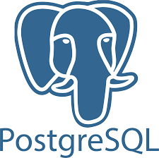
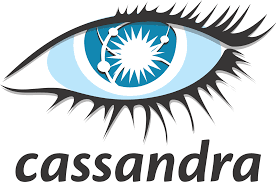
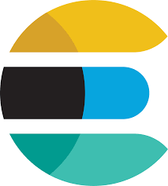
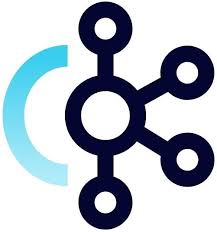
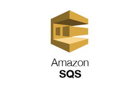
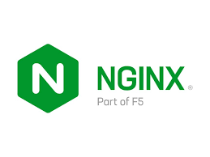
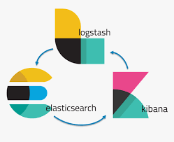
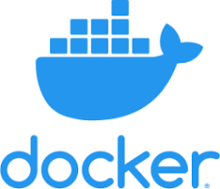
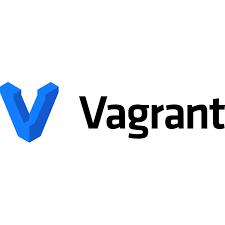

Front-end Technologies
Front-end Basics
Front-end development builds the user interface of websites using HTML for structure, CSS for styling, and JavaScript for interactivity, combining them to create responsive and engaging web experiences.
Front-end Frameworks
Front-end frameworks like React.js, Vue, and Angular, along with Webpack, boost web development by enabling dynamic, efficient UIs. React.js uses a virtual DOM for fast, component-based UIs; Vue offers simplicity and flexibility with two-way binding; Angular provides a robust, TypeScript-based toolkit for large apps; and Webpack optimizes assets for performance. Together, they support scalable, modern front-end solutions.
Front-end Styling Tools
Bootstrap, Tailwind CSS, and Material-UI are front-end technologies that enhance UI development with prebuilt solutions. Bootstrap offers a grid system and components for quick, consistent designs; Tailwind CSS provides utility classes for custom, responsive styling; and Material-UI delivers React-ready, Material Design components for sleek interfaces. Together, they enable fast, flexible, and attractive web development.
Database Technologies
Relational Databases
RDBMS is the overarching concept of relational databases, while MSSQL, MySQL, and PostgreSQL are specific implementations. MSSQL excels in Microsoft-centric enterprise environments; MySQL is lightweight and web-friendly; and PostgreSQL offers advanced features and versatility. Together, they provide structured data storage solutions for backend web development.

- 
No-SQL / Non-relational Databases
These NoSQL databases cater to modern backend needs: MongoDB excels in flexibility for general-purpose apps; Cassandra handles massive, distributed data; CouchDB supports offline-first and replication; and Elasticsearch powers fast search and analytics. Together, they address diverse, unstructured data challenges in web development.

- 
- 
Graph based Database
Neo4j specializes in graph databases, excelling at relationship-focused data like social networks, while ArangoDB offers a multi-model approach, blending graph, document, and key-value capabilities for versatile backend solutions. Both are ideal for complex, interconnected data in web development.
Message Queues
Kafka excels in high-volume data streaming, SQS simplifies managed queuing in AWS, ZeroMQ offers lightweight, brokerless messaging, and RabbitMQ provides robust, flexible queuing. Together, these message queue technologies enable asynchronous, scalable communication in backend systems.
- 
- 

DevOps Technologies
Infrastructure DevOps
NGINX powers web serving and traffic management, AWS and Azure provide scalable cloud infrastructure, and ELK enables advanced logging and monitoring. Together, they support hosting, scaling, and analyzing modern web applications.
- 

- 
Automation DevOps
Ansible simplifies server automation and deployment, Chef ensures consistent infrastructure management, and Jenkins drives CI/CD workflows. Together, they streamline backend development, deployment, and maintenance for web systems.
Virtualization DevOps
Virtualization is the process of creating virtual versions of computing resources like servers, storage, or networks—all running on a single physical machine.
- 

- 